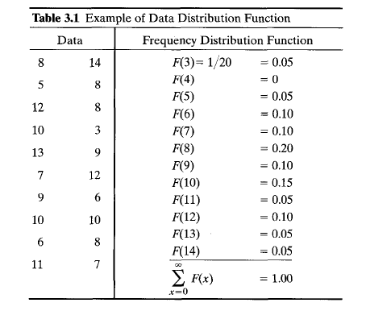
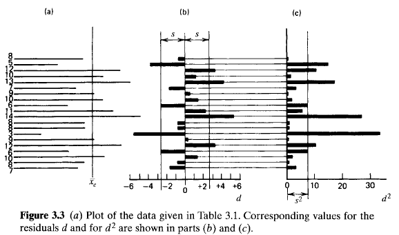

The value of counting statistics falls into two general categories. The first is to serve as a check on the normal functioning of a piece of nuclear counting equipment. Here a set of measurements is recorded under conditions in which all aspects of the experiment are held as constant as possible. Because of the influence of statistical fluctuations, these measurements will not all be the same but will show some degree of internal variation. The amount of this fluctuation can be quantified and compared with predictions of statistical models. If the amount of observed fluctuation is not consistent with predictions, one can conclude that some abnormality exists in the counting system. The second application is generally more valuable and deals with the situation in which we have only one measurement. We can then use counting statistics to predict its inherent statistical uncertainty and thus estimate an accuracy that should be associated with that single measurement.
The distinctions made in the organization of this chapter are a critical part of the topic. The confusion that often arises when the student is first introduced to counting statistics originates more from a failure to keep separate the concepts presented in Sections I and II than from any other single cause. In Section I we are careful to limit the discussion to methods used in the characterization or organization of experimental data. We are not particularly concerned where these data come from but rather are interested only in presenting the formal methods by which we can describe the amount of fluctuation displayed by the data. In Section II, we discuss the separate topic of probabilistic mathematical models, which can sometimes represent real measurement systems. For purposes of the discussion in Section II, however, we are concerned only with the structure and predictions of these models as mathematical entities. We reserve, until Section III, the demonstration of how the statistical models can be matched to experimental data, resulting in the two common applications of counting statistics mentioned above. In Section IV, we examine how the predicted statistical uncertainties propagate through the calculations typically needed to produce a quoted final result that is calculated from counting data. The final three sections of the chapter illustrate some further examples of applications of statistical principles in radiation measurements.
It is often convenient to represent the data set by a corresponding frequency distribution function \(F(x)\). The value of \(F(x)\) is the relative frequency with which the number appears in the collection of data. By definition \[ F(x) = \frac { \begin{eqnarray} \rm number \; of \; occurrences \; of \; the \; value \; \end{eqnarray} x } { \begin{eqnarray} \rm number \; of \; measurements \; \end{eqnarray} (= N) } \tag{3.3} \] The distribution is automatically normalized, that is, \[ \sum_{x = 0}^{\infty}F(x) = 1 \tag{3.4} \] As long as we do not care about the specific sequence of the numbers, the complete data distribution function \(F(x)\) represents all the information contained in the original data set.
For purposes of illustration, Table 3.1 gives a hypothetical set of data consisting of 20 entries. Because these entries range from a minimum of 3 to maximum of 14, the data distribution function will have nonzero values only between these extreme values of the argument x. The corresponding values of \(F(x)\) are also shown in Table 3.1.
A plot of the data distribution function for the example is given in Fig. 3.1. Also shown directly above the plot is a horizontal bar graph of the original 20 numbers from which the distribution was derived. These data show an experimental mean of 8.8, and the distribution function is in some sense centered about that value. Furthermore, the relative shape of the distribution function indicates qualitatively the amount of internal fluctuation in the data set. For example, Fig. 3.2 shows the shape of the distribution functions corresponding to two extreme sets of data: one with large amounts of scatter about the mean and one with little scatter. An obvious conclusion is that the width of the distribution function is a relative measure of the amount of fluctuation or scattering about the mean inherent in a given set of data.
It is possible to calculate the experimental mean by using the data distribution function, because the mean of any distribution is simply its first moment \[ \overline{x}_{e} = \sum_{x = 0}^{\infty}xF(x) \tag{3.5} \] It is also possible to derive another parameter, called the sample variance, which will serve to quantify the amount of internal fluctuation in the data set. The first step is to define the

If we take the square of each residual, however, a positive number will always result. These are plotted for the example in Fig. 3.3c.We next define the deviation of a given data point as the amount by which it differs from the true mean value \(\overline{x}\)
\[ \epsilon_{i} \equiv x_{i} - \overline{x} \tag{3.7} \] The deviation defined in this way is similar to the residual introduced above, except that the distance from the true mean value \(\overline{x}\) appears in the definition rather than the experimental mean \(\overline{x}_{e}\). We now can introduce the definition of the sample variance as the average value of each of these deviations after squaring \[ s^{2} = \overline{\epsilon^{2}} = \frac{1}{N}\sum_{i = 1}^{N}(x_{i} - \overline{x})^{2} \tag{3.8} \] The sample variance is a useful index of the degree of the internal scatter in the data or as a measure of how different a typical number is from another.This definition presents a practical difficulty, since we can never know the exact value of the true mean \(\overline{x}\) without collecting an infinite number of data points. The best we can do is to use the experimental mean value \(\overline{x}_{e}\) that we have measured, and thus use rcsiduals rather than deviations. But the process of using the experimental rather than the true mean value will affect the calculated value of the sample variance, and we cannot simply substitute \(\overline{x}_{e}\) iein to Eq. 3.8. Instead, the analysis given in Appendix B shows that the alternative expression
\[ s^{2} = \frac{1}{N - 1}\sum_{i = 1}^{N}(x_{i} - \overline{x})^{2} \tag{3.9} \] is now valid when the experimental mean is used. The sum of squared residuals in the above equation is divided by \(N - 1\) rather than by \(N\) as in Eq. 3.8, a distinction that is significant only when the number of measurements \(N\) is small. For large data sets, therefore, the sample variance can be thought of as the mean squared value of either the residuals or the deviations.The sample variance \(s^{2}\) for the example of 20 numbers is shown graphically in Fig. 3.3c. Because it is essentially a measure of the average value of the squared deviations of each point, \(s^{2}\) is an effective measure of the amount of fluctuation in the original data. A data set with a narrow distribution will have a small typical deviation from the mean, and therefore the value for the sample variance will be small. On the other hand, data with a large amount of fluctuation will have a wide distribution and a large value for typical deviations, and the corresponding sample variance will also be large. It is important to note that the sample variance is an absolute measure of the amount of internal scatter in the data and does not, to first approximation, depend on the number of values in the data set. For example, if the data shown in Fig. 3.3 were extended by simply collecting an additional 20 values by the same process, we would not expect the sample variance calculated for the extended collection of 40 numbers to be substantially different from that shown in Fig 3.3.
We can also calculate the sample variance directly from the data distribution function \(F(x)\). Because Eq. (3.8) indicates that \(s^{2}\) is simply the average of \((x - \overline{x})^{2}\), we can write that same average as
\[ s^{2} = \sum_{x = 0}^{\infty}(x - \overline{x})^{2}F(x) \tag{3.10} \] Equation (3.10) is not introduced so much for its usefulness in computation as for the parallel it provides to a similar expression, Eq. (3.17), which will be introduced in a later discussion of statistical models. An expansion of Eq. (3.10) will yield the well-known result \[ s^{2} = \overline{x^{2}} - (\overline{x})^{2} \tag{3.11} \]We now end our discussion of the organization of experimental data with two important conclusions:
The experimental mean is given by Eq. (3.5) and is the value about which the distribution is centered.The sample variance is given by Eq. (3.10) and is a measure of the width of the distribution, or the amount of internal fluctuation in the data.
To show how these conditions apply to real situations, Table 3.2 gives three separate examples. The third example indicates the basis for applying the theoretical framework that follows to the case of counting nuclear radiation events. In this case a trial consists of observing a given radioactive nucleus for a period of time \(t\), the number of trials is equivalent to the number of nuclei in the sample under observation, and the measurement consists of counting those nuclei that undergo decay. We identify the probability of success of any one trial asp. In the case of radioactive decay, that probability is equal to \((1 - e^{- \lambda t})\). where \(\lambda\) is the decay constant of the radioactive sample.
Three specific statistical models are introduced:

It should be emphasized that all the above models become identical for processes with a small individual success probability \(p\) but with a large enough number of trials so that the expected mean number of successes is large.
We show one example of an application of the binomial distribution. Imagine that we have an honest die so that the numbers 1 through 6 are all equally probable. Let us define a successful roll as one in which any of the numbers 3,4,5,o r 6 appear. Because these are four of the six possible results, the individual probability of success \(p\) is equal to \(\frac{4}{6}\) or 0.667. We now roll a die a total of 10 times and record the number of rolls that result in success as defined above. The binomial distribution now allows us to calculate the probability that exactly \(x\) out of the 10 trials will be successful, where \(x\) can vary between 0 and 10. Table 3.3 gives the values of the predicted probability distribution from Eq. (3.12) for the parameters \(p = \frac{2}{3}\) and \(n = 10\). The results are also plotted in Fig. 3.4 .We see that 7 is the most probable number of successes from 10 rolls of the die, with a probability of occurrence slightly greater than one out of four. From the value of \(P(0)\) we see that only twice out of 100,000 tests would we expect to see no successes from 10 rolls of the die.

Some properties of the binomial distribution are important. First, the distribution is normalized: \[ \sum_{x = 0}^{n}P(x) = 1 \tag{3.13} \] Also, we know that the average or mean value of the distribution is given by \[ \overline{x} = \sum_{x = 0}^{n}xP(x) \tag{3.14} \] If we now substitute Eq. (3.12) for \(P(x)\) and carry out the summation, a remarkably simple result is derived: \[ \overline{x} = pn \tag{3.15} \] Thus, we can calculate the expected average number of successes by multiplying the number of trials n by the probability p that any one trial will result in a success. In the example just discussed, we calculate an average number of successes as \[ \overline{x} = pn = \left( \frac{2}{3} \right) (10) = 6.67 \tag{3.16} \] The mean value is obviously a very fundamental and important property of any predicted distribution.
It is also important to derive a single parameter that can describe the amount of fluctuation predicted by a given distribution. We have already defined such a parameter, called the sample variance, for a set of experimental data as defined in Eq. (3.10). By analogy we now define a predicted variance \(\sigma^{2}\), which is a measure of the scatter about the mean predicted by a specific statistical model \(P(x)\): \[ \sigma^{2} = \sum_{x = 0}^{n}(x - \overline{x})^{2}P(x) \tag{3.17} \] Conventionally, \(\sigma^{2}\) is called the variance, and we emphasize the fact that it is associated with a predicted probability distribution function by calling it apredicted varimce. It is also conventional to define the standard deviation as the square root of \(\sigma^{2}\). Recall that the variance is in some sense a typical value of the squared deviation from the mean. Therefore, \(\sigma\) represents a typical value for the deviation itself, hence the name "standard deviation."
Now if we carry out the summation indicated in Eq. (3.17) for the specific case of \(P(x)\) given by the binomial distribution, the following result is obtained: \[ \sigma^{2} = np(1 - p) \tag{3.18} \] Because \(\overline{x} = np\), we can also write \[ \sigma^{2} = \overline{x}(1 - p) \tag{3.19} \] \[ \sigma = \sqrt{\overline{x}(1 - p)} \tag{3.20} \] We now have an expression that gives an immediate prediction of the amount of fluctuation inherent in a given binomial distribution in terms of the basic parameters of the distribution, \(n\) and \(p\), where \(\overline{x} = np\).
To return to the example of rolling a die, we defined success in such a way that \(p = \frac{2}{3}\). We also assumed 10 rolls of the die for each measurement so that \(n = 10\). For this example, the predicted mean number of successes is 6.67 and we can proceed to calculate the predicted variance \[ \sigma^{2} = np(1 - p) = (10)(0.667)(0.333) = 2.22 \tag{3.21} \] By taking the square root we get the predicted standard deviation: \[ \sigma = \sqrt{\sigma} = \sqrt{2.22} = 1.49 \tag{3.22} \] The significance of the standard deviation is illustrated in Fig. 3.4 .The mean value of the distribution is shown as the dashed line, and one value of the standard deviation is shown on either side of this mean. Because \(\sigma\) is a typical value for the difference between a given measurement and the true value of the mean, wide distributions will have large values for a and narrow distributions will correspond to small values. The plot illustrates that the association of \(\sigma\) with the width of the distribution is not inconsistent with the example shown in Fig. 3.4.
It can be shown that for a constant and small probability of success, the binomial distribution reduces to the form \[ P(x) = \frac{(pn)^{x}e^{-pn}}{x!} \tag{3.23} \] Because \(pn = \overline{x}\) holds for this distribution as well as for the parent binomial distribution, \[ P(x) = \frac{(\overline{x})^{x}e^{- \overline{x}}}{x!} \tag{3.24} \] which is now the familiar form of the Poisson distribution.
Recall that the binomial distribution requires values for two parameters: the number of trials \(n\) and the individual success probability \(p\). We note from Eq. (3.24) that a significant simplification has occurred in deriving the Poisson distribution — only one parameter is required, which is the product of \(n\) and \(p\). This is a very useful simplification because now we need only know the mean value of the distribution in order to reconstruct its amplitude at all other values of the argument. That is a great help for processes in which we can in some way measure or estimate the mean value, but for which we have no idea of either the individual probability or the size of the sample. Such is usually the case in nuclear measurements.
Some properties of the Poisson distribution follow directly. First, it is also a normalized distribution, or \[ \sum_{x = 0}^{n}P(x) = 1 \tag{3.25} \] We can also calculate the first moment or mean value of the distribution: \[ \overline{x} = \sum_{x = 0}^{n}xP(x) = pn \tag{3.26} \] which is the intuitively obvious result also obtained for the binomial distribution. The predicted variance of the distribution, however, differs from that of the binomial and can be evaluated from our prior definition \[ \sigma^{2} = \sum_{x = 0}^{n}(x - \overline{x})^{2}P(x) = pn \tag{3.27} \] or noting the result from Eq. (3.26) \[ \sigma^{2} = \overline{x} \tag{3.28} \] The predicted standard deviation is just the square root of the predicted variance, or \[ \sigma = \sqrt{\overline{x}} \tag{3.29} \]
Thus, we see that the predicted standard deviation of any Poisson distribution is just the square root of the mean value that characterizes that same distribution. Note that the corresponding result obtained earlier for the binomial distribution [Eq. (3.20)] reduces to the above result in the limit of \(p \ll 1\) already incorporated into the Poisson assumptions.
We again illustrate with an example. Suppose we randomly select a group of 1000 people and define our measurement as counting the number of current birthdays found among all members of that group. The measurement then consists of 1000 trials, each of which is a success only if a particular individual has his or her birthday today. If we assume a random distribution of birthdays, the probability of success p is equal to 1/365. Because \(p\) is much less than one in this example, we can immediately turn to the Poisson distribution to evaluate the probability distribution function that will describe the expected results from many such samplings of 1000 people. Thus, for our example,
| \(p = 1/365 = 0.00274\) |
| \(n = 1000\) |
| \(\overline{x} = pn = 2.74\) |
| \(\sigma = \sqrt{\overline{x}} = 1.66\) |
| \(P(x) = \frac{\overline{x}^{x}e^{-\overline{x}}}{x!} = \frac{(2.74)^xe^{-2.74}}{x!}\) |
Recall that \(P(x)\) gives the predicted probability that exactly \(x\) birthdays will be observed from a random sampling of 1000 people. The numerical values are plotted in Fig. 3.5 and show that \(x = 2\) is the most probable result. The mean value of 2.74 is also shown in the figure, together with one value of the standard deviation of 1.66 on either side of the mean. The distribution is roughly centered about the mean value, although considerable asymmetry is evident for this low value of the mean. Again the size of the standard deviation gives some indication of the width of the distribution or the amount of scatter predicted by the distribution.

We can again illustrate an example of a physical situation in which the Gaussian distribution is applicable. Suppose we return to the previous example of counting birthdays out of a group of randomly selected individuals, but now consider a much larger group of 10,000 people. For this example, \(p = \frac{1}{365}\) and \(n = 10,000\), so the predicted mean value of the distribution \(\overline{x} = np = 27.4\). Because the predicted mean is larger than 20, we can turn to the Gaussian distribution for the predicted distribution of the results of many measurements, each of which consists of counting the number of birthdays found in a different group of 10,000 people. The predicted probability of observing a specific count \(x\) is then given by \[ P(x) = \frac{1}{\sqrt{2 \pi \cdot 27.4}}\exp \left( - \frac{(x - 27.4)^2}{2 \cdot 27.4} \right) \tag{3.31} \] and the predicted standard deviation for the example is \[ \sigma = \sqrt{\overline{x}} = \sqrt{27.4} = 5.23 \tag{3.32} \] The results are shown graphically in Fig. 3.6a.
Two important observations can be made at this point about the Gaussian distribution:
Figure 3.6b shows the continuous form of the Gaussian distribution for the same example chosen to illustrate the discrete case. Comparing Fig. 3.6a and 3.6b, the scale factors for each abscissa are the same but the origin for Fig. 3.6b has been shifted to illustrate that a value of zero for the deviation \(\epsilon\) corresponds to the position of the mean value \(\overline{x}\) on Fig. 3.6a. If a factor of 2 difference in the relative ordinate scale is included as shown, then the continuous distribution \(G(\epsilon)\) represents the smooth curve that connects the pointwise values plotted in Fig. 3.6a.
Because we are now dealing with a continuous function, we must redefine some properties of the distribution as shown in Fig. 3.7. It should be particularly noted that quantities of physical interest now involve integrals of the distribution between set limits, or areas under the curve, rather than sums of discrete values.
Equation (3.33) can be rewritten in a more general form by incorporating several observations. We have already seen that the standard deviation \(\sigma\) of a Gaussian distribution is given by \(\sigma = \sqrt{\overline{x}}\), or \(\overline{x} = \sigma^{2}\). With this substitution in Eq. (3.33), the value of the exponential factor now depends only on the ratio of \(\epsilon\) tp \(\sigma\). Formally defining this ratio as \[ t \equiv \frac{\epsilon}{\sigma} \] the Gaussian distribution can be rewritten in terms of this new variable \(t\): \[ G(t) = G(\epsilon)\frac{d \epsilon}{dt} = G(\epsilon)\sigma \] \[ G(t) = \sqrt{\frac{2}{\pi}}e^{-t^{2}/2} \tag{3.34} \] where \(0 \leq t \leq \infty\). We now have a universal form of the Gaussian distribution, shown in Fig. 3.8, that is valid for all values of the mean \(\overline{x}\). Recall that \(t\) is just the observed deviation \(\epsilon \equiv |x - \overline{x}|\) normalized in units of the standard deviation \(\sigma\).


From the definitions illustrated in Fig. 3.7, the probability that a typical normalized
deviation \(t\) predicted by a Gaussian distribution will be less than a specific value \(t_{0}\) is given
by the integral
\[
\int_{0}^{t_{0}}G(t)dt \equiv f(t_{0})
\]

There are two major applications of counting statistics in nuclear measurements.The first of these, "Application A," involves the use of statistical analysis to determine whether a set of multiple measurements of the same physical quantity shows an amount of internal fluctuation that is consistent with statistical predictions. This application usually is used to determine whether a particular counting system is functioning normally. Although this is a useful application, a far more valuable contribution of counting statistics arises in situations in which we have only a single experimental measurement. In "Application B" we examine the methods available to make a prediction about the uncertainty one should associate with that single measurement to account for the unavoidable effects of statistical fluctuations.
Fig. 3.9 shows the chain of events that characterizes this application of counting statistics. Properties of the experimental data are confined to the left half of the figure, whereas on the right side are listed properties of an appropriate statistical model. We start in the upper-left corner with the collection of \(N\) independent measurements of the same physical quantity. These might be, for example, successive 1 min counts from a detector. Using the methods outlined in Section I, we can characterize the data in several ways. The data distribution function \(F(x)\) as defined in Eq. (3.3) can be compiled. From this distribution, the mean value \(\overline{x}_{e}\) and the sample variance \(s^{2}\) can be computed by the formulas given in Eqs. (3.5) and (3.9). Recall that the mean value \(\overline{x}_{e}\) gives the value about which the distribution is centered, whereas the sample variance \(s^{2}\) is a quantitative measure of the amount of fluctuation present in the collection of data.

We now are faced with the task of matching these experimental data with an appropriate statistical model. Almost universally we will want to match to either a Poisson or Gaussian distribution (depending on how large the mean value is), either of which is fully specified by its own mean value \(\overline{x}\). What should we choose for \(\overline{x}\)? We would be rather foolish if we chose any value other than \(\overline{x}_{e}\), which is our only estimate of the mean value for the distribution from which the data have been drawn. Setting \(\overline{x} = \overline{x}_{e}\) then provides the bridge from left to right in the figure, so that we now have a fully specified statistical model. If we let \(P(x)\) represent the Poisson or Gaussian distribution with \(\overline{x} = \overline{x}_{e}\) then the measured data distribution function \(F(x)\) should be an approximation to \(P(x)\) provided the statistical model accurately describes the distribution from which the data have arisen. One method of carrying out a comparison at this level is simply to make a superimposed plot of \(F(x)\) and \(P(x)\) and then to compare the shape and amplitude of the two distributions.
But such a comparison of two functions is, as yet, only qualitative. It is desirable to extract a single parameter from each distribution so that they can be compared quantitatively. The most fundamental parameter is the mean value, but these have already been matched and are the same by definition. A second parameter of each distribution is the variance, and we can carry out the desired quantitative comparison by noting the predicted variance \(\sigma^{2}\) of the statistical model and comparing with the measured sample variance \(s^{2}\) of the collection of data. If the data are actually characterized by the statistical model and show a degree of internal fluctuation that is consistent with statistical prediction, these two variance values should be about the same.
To illustrate the direct comparison of the data distribution function with the predicted probability distribution function, we return to the example of data given in Table 3.1. In Fig. 3.10 data distribution function has been replotted as the solid vertical bars. The mean value for these data was calculated to be \(\overline{x}_{e} = 8.8\) so the transition to the appropriate statistical model is made by assuming its mean value to be \(\overline{x} = 8.8\). Because the mean value is not large, we are prohibited from using the Gaussian distribution and we therefore use the Poisson as the assumed statistical model. The points on Fig. 3.10 are the values of the predicted distribution function of the Poisson distribution for a mean value of 8.8. Because the Poisson is defined only for discrete values of \(x\), the continuous curve is drawn only to connect the points for visual reference.
At this point a comparison of the two distributions is difficult. Because relatively few data points were obtained (20 measurements) the value of \(F(x)\) at each point is subject to rather large fluctuations. One would expect that, if more data were gathered, the fluctuations would diminish and the data distribution function \(F(x)\) would adhere more and more closely to the predicted probability distribution function \(P(x)\), provided the data are indeed a true sample from the predicted statistical model. From Fig. 3.10 we can only say that the experimental data are not grossly at variance with the prediction.
To take the comparison one step further, we would now like to compare the value of the sample variance and the predicted variance from the statistical model. The sample variance calculated from Eq. (3.8) for the same set of data is found to be \[ s^{2} = 8.8 \] Because the assumed statistical model is the Poisson distribution, the predicted variance is given by \[ \sigma^{2} = \overline{x} = 8.80 \] These two results show that there is less fluctuation in the data than would be predicted if the data were a perfect sample from a Poisson distribution of the same mean. With a limited sample size, however, one would not expect these two parameters to be precisely the same and a more quantitative test is required to determine whether the observed difference is really significant. This function is provided by the "chi-squared test."
Chi-squared is simply another parameter of the experimental data distribution and is defined as \[ \chi^{2} = \frac{1}{\overline{x}_{e}}\sum_{i = 1}^{N}(x_{i} - \overline{x}_{e})^{2} \tag{3.35} \] where the summation is taken over each individual data point \(x_{i}\). Chi-squared is closely related to the sample variance and the two are related by \[ \chi^{2} = \frac{(N - 1)s^{2}}{\overline{x}_{e}} \tag{3.36} \] Now if the amount of fluctuation present in the data is closely modeled by the Poisson distribution, then \(s^{2 } \cong \sigma^{2}\). But we know that for the Poisson distribution, \(\sigma^{2} = \overline{x}\). Furthermore, we have chosen \(\overline{x}\) to be equal to \(\overline{x}_{e}\).Therefore, the degree to which the ratio \(s^{2}/\overline{x}\) deviates from unity is a direct measure of the extent to which the observed sample variance differs from the predicted variance. Now referring to Eq. (3.36), the degree to which \(\chi^{2}\) differs from \(N - 1\) is a corresponding measure of the departure of the data from predictions of the Poisson distribution. Chi-squared distribution tables may be found (e.g. Ref. 3) that are generally cast in the form shown in Table 3.5. The column on the left indicates the number of statistical degrees of freedom in the system. (This is one less than the number of independent measurements used to derive the value of \(\chi^{2}\) because \(\overline{x}_{e}\), has been calculated from the same set of data.) Each column in the table is headed by a specific value of \(p\), defined as the probability that a random sample from a true Poisson distribution would have a larger value of \(\chi^{2}\) than the specific value shown in the table. Very low probabilities (say less than 0.02) indicate abnormally large fluctuations in the data, whereas very high probabilities (greater than 0.98) indicate abnormally small fluctuations. A perfect fit to the Poisson distribution for large samples would yield a probability of 0.50, whereas the somewhat arbitrary limits listed above indicate situations in which the counting system may be displaying either abnormally large fluctuations (which is the usual type of malfunction) or data that are too regular and show abnormally small fluctuations. Figure 3.11 gives a plot of the \(\chi^{2}\) distribution for a wider range of the parameters involved.
For the illustrative example given above, we calculate a \(\chi^{2}\) value of 15.89. From Table 3.5 for \(N = 20\) we find (by interpolation) a value of \(p = 0.66\). Because that probability is neither very large nor very small, we would conclude that the equipment used to generate the set of numbers originally shown does not give rise to abnormal fluctuations.
The process is illustrated in Fig. 3.12. Again, the left half of the figure deals only with experimental data, whereas the right half deals only with the statistical model. We start in the upper-left corner with a single measurement, \(x\). If we make the assumption that the measurement has been drawn from a population whose theoretical distribution function is predicted by either a Poisson or Gaussian distribution, then we must match an appropriate theoretical distribution to the available data. For either model we must start with a value for the mean \(\overline{x}\) of the distribution. Because the value of our single measurement \(x\) is the only information we have about the theoretical distribution from which it has been drawn, we have no real choice other than to assume that the mean of the distribution is equal to the single measurement, or \(\overline{x} = x\). Having now obtained an assumed value for \(\overline{x}\), the entire predicted probability distribution function \(P(x)\) is defined for all values of \(x\). We can also immediately find a value for the predicted variance \(\sigma^{2}\) of that distribution. We can then use the association that, if the data are drawn from the same distribution, an estimate of the sample variance \(s^{2}\) of a collection of such data should be given by \(\sigma^{2}\). Through this process we have therefore obtained an estimate for the sample variance of a repeated set of measurements that do not exist but that represent the expected results if the single measurement were to be repeated many times.
The conclusion we reach can then be stated as follows:
| The expected sample variance |
\(s^{2} \equiv \sigma^{2}\) |
of the statistical model from which we think the measurement \(x\) is drawn |
| \(= \overline{x}\) |
provided the model is either Poisson or Gaussian |
|
| \(\cong x\) |
because \(x\) is our only measurement on which to base an estimate of \(\overline{x}\) |
This conclusion can be stated somewhat more quantitatively provided the assumed probability distribution function is a Gaussian (\(x\) is large). Then the range of values \(x \pm \sigma\) or \(x \pm \sqrt{x}\) will contain the true mean \(\overline{x}\) with 68% probability.This conclusion follows directly from earlier statements about the shape of the Gaussian curve.? It is conventional to quote the uncertainty or "error" of a single measurement as simply one value of the standard deviation \(\sigma\). If we quote a larger uncertainty, then the probability of including the true mean within the quoted interval is increased, and vice versa.
To illustrate, assume we have a single measurement \(x = 100\). Then \[ \sigma = \sqrt{x} = \sqrt{100} = 10 \] Because our best estimate of the mean value of the distribution from which this measurement was drawn (the measurement itself) is large, we can assume that the parent distribution is a Gaussian. From the shape of the Gaussian curve (see Table 3.4) we can then construct Table 3.6 for the specific example. The table gives various options available in quoting the uncertainty to be associated with our single measurement. The conventional choice is to quote the measurement plus or minus one value of the standard deviation \(\sigma\), or \(100 \pm 10\). This interval is expected to contain the true mean value \(\overline{x}\) with a probability of 68%. If we wish to increase the probability that the true mean is included, we can do so only by expanding the interval or error associated with the measurement. For example, to achieve a 99% probability that the true mean is included, the interval must be expanded to \(2.58 \sigma\), or the range \(100 \pm 25.8\) for our example. Unless otherwise stated, the errors quoted with a particular nuclear measurement normally represent one standard deviation.
The fractional standard deviation, defined as \(\sigma/x\), of a simple counting measurement is given by \(\sqrt{x}/x\), or \(1/\sqrt(x)\). Thus, the total number of recorded counts \(x\) completely determines the fractional error to be associated with that measurement. If 100 counts are recorded, the fractional standard deviation is 10%, whereas it can be reduced to 1% only by increasing the total counts recorded to 10,000. For events occurring at a constant rate, this relation implies that the time required to achieve a given fractional error will increase as the inverse square of the desired statistical precision.
When a set of measurements is presented graphically, the estimated errors associated with each measurement are often displayed on the same graph. Figure 3.13 gives a hypothetical set of measurements of a quantity \(x\) as a function of some other variable or parameter z. The measured data are presented as points, whereas the uncertainty associated with each point is indicated by the length of the "error bar" drawn around each point. It is conventional to show the length of the error bar equal to one value of a on either side of the point or the total length of the error bar equal to \(2\sigma\). Under these conditions, if one were to attempt a fit of an assumed functional behavior \(x = f(z)\), the fitted function should at best pass through 68% (or roughly two-thirds) of all the error bars associated with the data.
One cannot associate the standard deviation \(\sigma\) with the square root of any quantity that is not a directly measured number of counts. For example, the association does not apply to
To illustrate, assume that measurements are made under conditions in which it is expected that the "raw" counts should follow the Gaussian distribution of Eq. (3.30). Only one parameter, the mean value, is needed to fully specify the distribution, and the standard deviation is just the square root of the mean. Now assume that these counts were recorded using a background-free detector system that records only half of the quanta emitted by the source of the radiation, or, as will be formally introduced in Chapter 4, the system has an absolute detection efficiency of 50%. We would then multiply the number of counts by a factor of 2 to obtain a value for of the number of quanta emitted by the source. If identical measurements were then repeated many times, the multiplication process will produce a distribution of calculated emission numbers that will follow a new distribution. Clearly its mean will be twice that of the average number of counts, but what will be its shape and standard deviation?
The answer to this question is that a multiplication by a constant as in this example will produce a new distribution that also has the shape of a Gaussian, but for which the standard deviation \(\sigma\) is no longer given by the square root of the mean value. Now it is necessary to represent the distribution with two parameters, its mean and standard deviation. This form of the continuous Gaussian distribution analogous to Eq. (3.30) is conventionally written as \[ G(x)dx = \frac{1}{\sigma}\frac{1}{\sqrt{2\pi}}\exp \left( - \frac{(x - \overline{x})^{2}}{2\sigma^{2}} \right)dx \] where \(G(x)dx\) is the probability of observing a value between \(x\) and \(x + dx\). The shape of the distribution is still described by Eq. (3.34): \[ G(t)dt = \sqrt{\frac{2}{\pi}}e^{-t^{2}/2}dt \] where \[ t \equiv \frac{|x - \overline{x}|}{\sigma} \] and the properties of the distribution listed in Table 3.4 remain valid.
It turns out that many of the common manipulations when carried out on counting data that were originally Gaussian distributed will produce derived values that also follow a Gaussian shape. Such operations include multiplying or dividing the data by a constant, combining two Gaussian-distributed variables through addition, subtraction, or multiplication, or calculating the average of a series of independent measurements. While the mean value of the derived distribution is simply predicted from the means of the original distributions, the standard deviation values are not so obvious. This section describes the process that can be used to predict these standard deviations. In the examples shown, the derived distribution will be of Gaussian shape provided the distribution of the original data is also Gaussian. It can be shown that if the errors are individually small and symmetric about zero, a general result can be obtained for the expected error to be associated with any quantity that is calculated as a function of any number of independent variables. If \(x, y, z, ...\) are directly measured counts or related variables for which we know \(\sigma_{x}, \sigma_{y}, \sigma_{z}, ...\) then the standard deviation for any quantity \(u\) derived from these counts can be calculated from \[ \sigma_{u}^{2} = \left( \frac{\partial u}{\partial x} \right)^{2} \sigma_{x}^{2} + \left( \frac{\partial u}{\partial y} \right)^{2} \sigma_{y}^{2} + \left( \frac{\partial u}{\partial z} \right)^{2} \sigma_{z}^{2} + ... \tag{3.37} \] where \(u = u(x, y, z, ...)\) represents the derived quantity. Equation (3.37) is generally known as the error propagation formula and is applicable to almost all situations in nuclear measurements. The variables \(x, y, z, ...\), however, must be chosen so that they are truly independent in order to avoid the effects of correlation. The same specific count should not contribute to the value of more than one such variable. The use of Eq. (3.37) can be illustrated by application to some simple cases.
| \(u = x + y\) | or | \(u = x - y\) |
| \(\frac{\partial u}{\partial x} = 1\) | and | \(\frac{\partial u}{\partial y} = \pm 1\) |
A common application of this case arises when counts resulting from a radioactive source must be corrected by subtracting an appropriate background count. If we assume equal counting times, then \[ \rm net \, counts = total \, counts - background \, counts \] or \[ u = x - y \] Because both \(x\) and \(y\) are directly measured numbers of counts (or successes), the expected standard deviation of each is known to be its own square root. The object is to deduce the expected standard deviation of the net counts, a derived number. Because a simple difference is involved, the answer will be given by Eq. (3.38).
To illustrate by example, suppose we have recorded the following data for equal counting times
| \({\rm total \, counts} = x = 1071\) |
| \({\rm background \, counts} = 521\) |
| \(\sigma_{x} = \sqrt{x} = \sqrt{1071}\) |
| \(\sigma_{y} = \sqrt{y} = \sqrt{521}\) |
| \(\sigma_{u} = \sqrt{\sigma_{x}^{2} + \sigma_{y}^{2}} = \sqrt{x + y} = \sqrt{1592} = 39.9\) |
| \({\rm net \, counts} = 550 \pm 39.9 \) |
A familiar example of the above case is the calculation of a counting rate. If \(x\) counts are recorded over a time \(t\), then \[ {\rm counting \, rate} \equiv r = \frac{x}{t} \] The usual assumption is that the time is measured with very small uncertainty, so that \(t\) can be considered a constant. Then Eq. (3.40) can be used to calculate the expected standard deviation in \(r\) corresponding to the known standard deviation in the number of counts \(x\).
| \(x = 1120 \, {\rm counts}\) | and | \(t = 5s\) |
As an example, suppose we wish to calculate the ratio of two source activities from independent counts taken for equal counting times (background is neglected). Assume \[ {\rm counts \, from \, source \, 1} \equiv N_{1} = 16265 \] \[ {\rm counts \, from \, source \, 2} \equiv N_{2} = 8192 \] \[ {\rm activity \, ratio}: \quad R \equiv \frac{N_{1}}{N_{2}} = \frac{16265}{8192} = 1.985 \] From Eq. (3.41') \[ \left( \frac{\sigma_{R}}{R} \right)^{2} = \left( \frac{\sigma_{N_{1}}}{N_{1}} \right)^{2} + \left( \frac{\sigma_{N_{2}}}{N_{2}} \right)^{2} = \frac{N_{1}}{N_{1}^{2}} + \frac{N_{2}}{N_{2}^{2}} = 1.835 \times 10^{-4} \] \[ \frac{\sigma_{R}}{R} = \sqrt{1.835 \times 10^{-4}} = 0.0135 \] and multiplying by the value of \(R\) \[ \sigma_{R} = 0.027 \] Therefore, the reported result would be \[ R = 1.985 \pm 0.027 \]
This result shows that the standard deviation expected for the sum of all the counts is the same as if the measurement had been carried out by performing a single count, extending over the entire period represented by all the independent counts.
Equation (3.43) is an example of dividing an error-associated quantity (\(\Sigma\)) by a constant (\(N\)). Therefore, Eq. (3.40) applies and the expected standard deviation of this mean value is given by \[ \sigma_{\overline{x}} = \frac{\sigma_{\Sigma}}{N} = \frac{\sqrt{\Sigma}}{N} = \frac{\sqrt{N\overline{x}}}{N} \] \[ \sigma_{\overline{x}} = \sqrt{\frac{\overline{x}}{N}} \tag{3.44} \]
Note that the expected standard deviation of any single measurement \(x_{i}\) is \[ \sigma_{x_{i}} = \sqrt{x_{i}} \] Because any typical count will not differ greatly from the mean, \(x_{i} \cong \overline{x}\), and we therefore conclude that the mean value based on \(N\) independent counts will have an expected error that is smaller by a factor \(\sqrt{N}\) compared with any single measurement on which the mean is based. A general conclusion is that, if we wish to improve the statistical precision of a given measurement by a factor of 2, we must invest four times the initial counting time.
Let each individual measurement \(x_{i}\) be given a weighting factor \(a_{i}\) and the best value \(\langle x \rangle\) computed from the linear combination \[ \langle x \rangle = \frac{\sum_{i = 1}^{N}a_{i}x_{i}}{\sum_{i = 1}^{N}a_{i}} \tag{3.45} \] We now seek a criterion by which the weighting factors ai should be chosen in order to minimize the expected error in \(\langle x \rangle\).
For brevity, we write \[ \alpha = \sum_{i = 1}^{N}a_{i} \] so that \[ \langle x \rangle = \frac{1}{\alpha}\sum_{i = 1}^{N}a_{i}x_{i} \] Now apply the error propagation formula [Eq. (3.37)]t o this case: \begin{eqnarray} \sigma_{\langle x \rangle}^{2} &=& \sum_{i = 1}^{N}\left( \frac{\partial(x)}{\partial x_{i}} \right)^{2}\sigma_{x_{i}}^{2} \\ &=& \sum_{i = 1}^{N}\left( \frac{a_{i}}{\alpha} \right)^{2}\sigma_{x_{i}}^{2} \\ &=& \frac{1}{\alpha^{2}}\sum_{i = 1}^{N}a_{i}^{2}\sigma_{x_{i}}^{2} \end{eqnarray} \[ \sigma_{\langle x \rangle}^{2} = \frac{\beta}{\alpha^{2}} \tag{3.46} \] where \[ \beta = \sum_{i = 1}^{N}a_{i}^{2}\sigma_{x_{i}}^{2} \] In order to minimize \(\sigma_{\langle x \rangle}\), we must minimize \(\sigma_{\langle x \rangle}^{2}\) from Eq. (3.46) with respect to a typical weighting factor \(a_{j}\); \[ 0 = \frac{\partial \sigma_{\langle x \rangle}^{2}}{\partial a_{j}} = \frac{\alpha^{2}\frac{\partial \beta}{\partial a_{j}} -2\alpha\beta\frac{\partial \alpha}{\partial a_{j}}}{\alpha^{4}} \tag{3.47} \] Note that \[ \frac{\partial\alpha}{\partial a_{j}} = 1, \quad \frac{\partial\beta}{\partial a_{j}} = 2a_{j}\sigma_{x_{j}}^{2} \] Putting these results into Eq. (3.47)w, e obtain \[ \frac{1}{\alpha^{4}}(2\alpha^{2}a_{j}\sigma_{x_{j}}^{2} - 2\alpha\beta) = 0 \] and solving for \(a_{j}\), we find \[ a_{j} = \frac{\beta}{\alpha}\cdot\frac{1}{\sigma_{x_{j}}^{2}} \tag{3.48} \] If we choose to normalize the weighting coefficients, \[ \sum_{i = 1}^{N} \equiv \alpha = 1 \] \[ a_{j} = \frac{\beta}{\sigma_{x_{j}}^{2}} \] Putting this into the definition of \(\beta\), we obtain \[ \beta = \sum_{i = 1}^{N}a_{i}^{2}\sigma_{x_{i}}^{2} = \sum_{i = 1}^{N}\left( \frac{\beta}{\sigma_{x_{i}}^{2}} \right)^{2}\sigma_{x_{i}}^{2} \] or \[ \beta = \left( \sum_{i = 1}^{N}\frac{1}{\sigma_{x_{i}}^{2}} \right)^{-1} \tag{3.49} \] Therefore, the proper choice for the normalized weighting coefficient for \(x_{j}\), is \[ a_{j} = \frac{1}{\sigma_{x_{j}}^{2}}\left( \sum_{i = 1}^{N}\frac{1}{\sigma_{x_{i}}^{2}} \right)^{-1} \tag{3.50} \] We therefore see that each data point should be weighted inversely as the square of its own error.
Assuming that this optimal weighting is followed, what will be the resultant (minimum) error in \(\langle x \rangle\)? Because we have chosen \(\alpha = 1\) for normalization, Eq. (3.46) becomes \[ \sigma_{\langle x \rangle} = \beta \] In the case of optimal weighting, \(\beta\) is given by Eq. (3.49). Therefore, \[ \frac{1}{\sigma_{\langle x \rangle}^{2}} = \sum_{i = 1}^{N}\frac{1}{\sigma_{x_{i}}^{2}} \tag{3.51} \] From Eq. (3.51), the expected standard deviation \(\sigma_{\langle x \rangle}\) can be calculated from the standard deviations \(\sigma_{x_{i}}\) associated with each individual measurement.
Applying the results of error propagation analysis to Eq. (3.52), we obtain \begin{eqnarray} \sigma_{S} &=& \left[ \left( \frac{\sigma_{N_{1}}}{T_{S + B}} \right)^{2} + \left( \frac{\sigma_{N_{2}}}{T_{B}} \right)^{2} \right]^{1/2} \\ &=& \left( \frac{N_{1}}{T_{S + B}^{2}} + \frac{N_{2}}{T_{B}^{2}} \right)^{1/2} \\ &=& \left( \frac{S + B}{T_{S+B}} + \frac{B}{T_{B}} \right)^{1/2} \tag{3.53} \end{eqnarray} If we now assume that a fixed total time \(T = T_{S+B} + T_{B}\) is available to carry out both measurements, the above uncertainty can be minimized by optimally choosing the fraction of \(T\) allocated to \(T_{S+B}\), (or \(T_{B}\)). We square Eq. (3.53) and differentiate \[ 2\sigma_{S}d\sigma_{S} = - \frac{S + B}{T_{S+B}^{2}}dT_{S+B} - \frac{B}{T_{B}^{2}}dT_{B} \] and set \(d\sigma_{S} = 0\) to find the optimum condition. Also, because \(T\) is a constant, \(dT_{S + B} + dT_{B} = O\).The optimum division of time is then obtained by meeting the condition \[ \left. \frac{T_{S + B}}{T_{B}} \right| _{opt} = \sqrt{\frac{S + B}{B}} \tag{3.54} \]
A figure of merit that can be used to characterize this type of counting experiment is the inverse of the total time, or \(1/T\), required to determine \(S\) to within a given statistical accuracy. If certain parameters of the experiment (such as detector size and pulse acceptance criteria) can be varied, the optimal choice should correspond to maximizing this figure of merit.
In the following analysis, we assume that the optimal division of counting times given by Eq. (3.54) is chosen. Then we can combine Eqs. (3.53) and (3.54) to obtain an expression for the figure of merit in terms of the fractional standard deviation of the source rate, defined as \(\epsilon \equiv \sigma_{S}/S\) \[ \frac{1}{T} = \epsilon^{2}\frac{S^{2}}{(\sqrt{S + B} + \sqrt{B})^{2}} \tag{3.55} \] Equation (3.55) is a useful result that can be applied to analyze the large category of radiation measurements in which a signal rate \(S\) is to be measured in the presence of a steady-state background rate \(B\). For example, it predicts the attainable statistical accuracy (in terms of the fractional standard deviation \(\epsilon\)) when a total time \(T\) is available to measure the signal plus background and the background alone. The assumption has been made that this time is subdivided optimally between the two counts. Note that, in common with simple counting measurements, the time required varies as the inverse square of the fractional standard deviation desired for the net signal rate precision. Cutting the predicted statistical error of a measurement in half requires increasing the available time by a factor of 4.
It is instructive to examine two extreme cases in the application of Eq. (3.55). If the source-induced rate is much greater than the background, \(S \gg B\) and Eq. (3.55) reduces to \[ \frac{1}{T} \cong \epsilon^{2}S \tag{3.56} \] In this limit, the statistical influence of background is negligible. The figure of merit \(1 / T\) is maximized simply by choosing all experiment parameters to maximize \(S\), or the rate due to the source alone.
The opposite extreme of a small source rate in a much larger background (\(S \ll B\)) is typical of low-level radioactivity measurements. In this case, Eq. (3.55) reduces to \[ \frac{1}{T} \cong \epsilon^{2}\frac{S^{2}}{4B} \tag{3.57} \] For such applications, the figure of merit is maximized by choosing experimental conditions so that the ratio \(S^{2} / B\) is maximized. As an example of the application of Eq. (3.57), assume that changing the detector configuration in a low-level counting experiment increases the rate due to the source alone by a factor of 1.5, but also increases the background by a factor of 2.0. The ratio \(S^{2} / B\) is then \((1.5)^{2}/2.0 = 1.125\) times its former value. Because this ratio exceeds unity, the change will slightly improve the overall statistical accuracy of the net source rate determination if the total measurement time is held constant.
In the simplest case, a counting system is set up to detect the radiation of interest and the total number of counts recorded for equal periods of time as different samples are put in place. Let \(N_{T}\) be the number of counts recorded with an unknown sample and \(N_{B}\) be the number of recorded counts when a blank sample is substituted to determine the background level. (In the analysis of the previous section, it was shown that equal allocation of time to the sample and background is the proper choice to minimize the uncertainty in the net counts when the source is weak compared with background.) The net counts resulting from the unknown are then calculated as \[ N_{S} = N_{T} - N_{B} \tag{3.58} \]
To make a decision whether the sample contains activity, \(N_{S}\) is then compared with a critical level \(L_{C}\) that will be determined in the analysis that follows. A simple protocol is followed: If \(N_{S}\) is less than \(L_{C}\) it is concluded that the sample does not contain activity, whereas if \(N_{S}\) exceeds \(L_{C}\), it is assumed that some real activity is present.
In the absence of statistical fluctuations and other instrumental variations, \(L_{C}\) could be set at zero, and any net positive counts could be interpreted as evidence of real activity. With the statistical fluctuations that are inevitable in any counting measurement, however, there will be many instances of positive \(N_{S}\) that will be observed even for samples with no activity, One would therefore like to choose a value of \(L_{C}\) that is high enough to minimize the likelihood of such false positives, while keeping it low to reduce the possibility of missing real activity when some is actually present (false negatives).
If we assume that the counting time is long enough so that the total number of counts recorded in each of these measurements is large (say > 30), then both \(N_{T}\) and \(N_{B}\) should follow Gaussian distributions. When these two variables are subtracted to determine \(N_{S}\), the net counts should also follow a Gaussian whose mean is the true net number of counts, and whose standard deviation can be predicted using Eq. (3.38): \[ \sigma_{N_{S}}^{2} = \sigma_{N_{T}}^{2} + \sigma_{N_{B}}^{2} \tag{3.59} \]